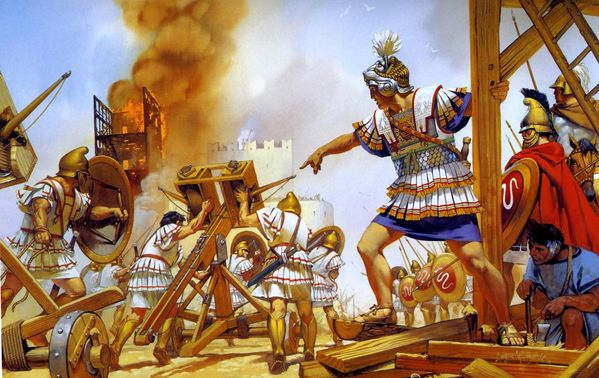

Présentation mémoire de recherche :
L'expérience du siège dans le monde grec du IVe au Ier siècle avant J.-C.

Principaux axes de recherche
- L'expérience sensible de l'individu assiégé
- Cité assiégée : l'identité individuelle et collective menacée
- Le contrôle des corps dans un état d'exception
- Négocier, survivre ou subir le courrou adverse : l'honneur civique au coeur des décisions de la polis